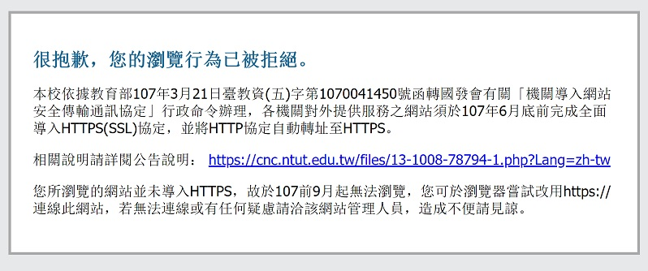

Problems with the submission system
posted Wednesday, September 12, 2018
If you are unable to access Kuolao's homework submission system, it is because Kuolao's homework submission system is still on HTTP, and due to new regulations by the Ministry of Education regarding application protocols for college websites, all webpages in college websites must be on HTTPS. If you are trying to access any webpage in Taipei Tech's website (www.ntut.edu.tw) that still uses HTTP, you will get the following message informing you that your access request is denied:

The new policy regarding the use of HTTPS in websites of government agencies and institutions (colleges and universities included) is enforced by the National Development Council, in order to ensure the safety, security, as well as the authenticity of those websites.
Expect updates soon, and we apologize for the inconvenience.